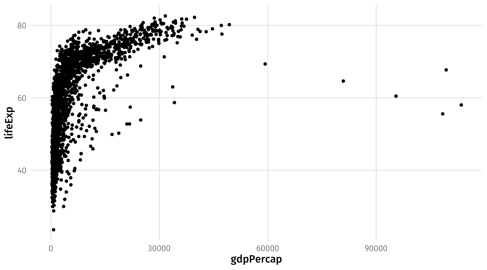
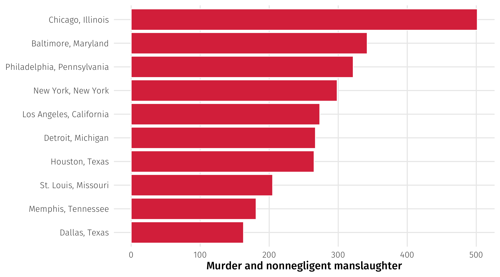
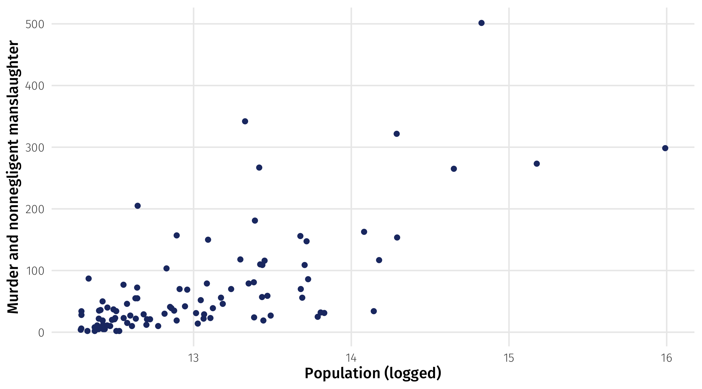
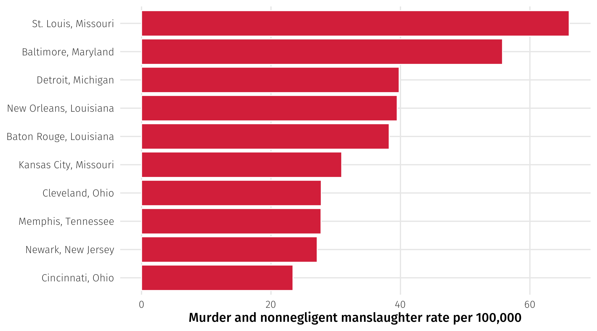

Data wrangling II
POL51
University of California, Davis
September 30, 2024
Plan for today
Making amends + objects review
Mutating new variables
Creating categories
Weekly check-in
So far, you:
somehow do not know how to make every graph from scratch based solely off memory
are confused about errors you are seeing for the first time in a computer program you’ve never used before
are unable to re-type all the code I am presenting on slides into your notes at what would be a rate on par with a professional court stenographer
Weekly check-in
You are confused and unsure of yourselves
But you are doing well
You’ve only been coding for two weeks
You just need to know how to piece together answers from notes + slides
You will slowly get better at coding, and dealing with errors (be patient!)
Back to objects
Using objects
What if I wanted to make this same plot, but only looking at Asian countries?
Subset to Asia
I can use filter() to subset the data to Asia, store it as a new object gap_asia, and use that new object to make a plot
Using the new object
Notice how I need to use the new object
the original gapminder does not have what I want

filter() and variables types
Filtering requires knowing the type of variable you are working with
Categorical variables use quotes, and spelling must be exact
✅
What values does a variable take on?
To figure out what values a variable can take on, you can use distinct()
Homicides in 2019
| state | city | population | murder_total |
|---|---|---|---|
| Alabama | Mobile | 248431 | 50 |
| Alaska | Anchorage | 296188 | 27 |
| Arizona | Chandler | 249355 | 5 |
| Arizona | Gilbert | 242090 | 5 |
| Arizona | Glendale | 249273 | 12 |
| Arizona | Mesa | 492268 | 23 |
Most violent cities in America?
Fewer deaths in towns with less people
Normalizing variables
To compare across cities we need to take into account differences in population
We want to know how many murders have taken place (or drug overdoses, or crimes, or COVID cases, or…) per person in the city (per capita)
This is called normalizing a variable; changing it so that we can make units more comparable
Murder rate
In math terms this is just dividing the number of murders by population:
\(Murders_{capita} = \frac{Murders}{Population}\) = “how many murders per person”
Since this fraction is tiny, the convention is to multiply by a number that makes sense
for the population of a city, say 100,000 people
\(Murders_{per 100k} = \frac{Murders}{Population} \times 100,000\) = “how many murders per 100,000 people”
Comparing murder rates
If we look at murder rates, the picture changes:
Making new variables with mutate()
mutate() adds new variables to data

Using mutate
# A tibble: 100 × 4
state city population murder_total
<chr> <chr> <dbl> <dbl>
1 Alabama Mobile 248431 50.0
2 Alaska Anchorage 296188 27.0
3 Arizona Chandler 249355 5.01
4 Arizona Gilbert 242090 5.01
5 Arizona Glendale 249273 12.0
6 Arizona Mesa 492268 23.0
7 Arizona Phoenix 1608139 154.
8 Arizona Scottsdale 251840 5.01
9 Arizona Tucson 532323 46.0
10 California Anaheim 353400 10.0
# ℹ 90 more rowsUsing mutate
# A tibble: 100 × 4
state city population murder_total
<chr> <chr> <dbl> <dbl>
1 Alabama Mobile 248431 50.0
2 Alaska Anchorage 296188 27.0
3 Arizona Chandler 249355 5.01
4 Arizona Gilbert 242090 5.01
5 Arizona Glendale 249273 12.0
6 Arizona Mesa 492268 23.0
7 Arizona Phoenix 1608139 154.
8 Arizona Scottsdale 251840 5.01
9 Arizona Tucson 532323 46.0
10 California Anaheim 353400 10.0
# ℹ 90 more rowsUsing mutate
# A tibble: 100 × 5
state city population murder_total murder_capita
<chr> <chr> <dbl> <dbl> <dbl>
1 Alabama Mobile 248431 50.0 0.000201
2 Alaska Anchorage 296188 27.0 0.0000912
3 Arizona Chandler 249355 5.01 0.0000201
4 Arizona Gilbert 242090 5.01 0.0000207
5 Arizona Glendale 249273 12.0 0.0000481
6 Arizona Mesa 492268 23.0 0.0000467
7 Arizona Phoenix 1608139 154. 0.0000955
8 Arizona Scottsdale 251840 5.01 0.0000199
9 Arizona Tucson 532323 46.0 0.0000864
10 California Anaheim 353400 10.0 0.0000283
# ℹ 90 more rowsNotice that I named a new variable, murder_capita
Using mutate
murder_set |>
mutate(murder_capita = murder_total / population,
murder_rate = murder_capita * 100000)# A tibble: 100 × 6
state city population murder_total murder_capita murder_rate
<chr> <chr> <dbl> <dbl> <dbl> <dbl>
1 Alabama Mobile 248431 50.0 0.000201 20.1
2 Alaska Anchorage 296188 27.0 0.0000912 9.12
3 Arizona Chandler 249355 5.01 0.0000201 2.01
4 Arizona Gilbert 242090 5.01 0.0000207 2.07
5 Arizona Glendale 249273 12.0 0.0000481 4.81
6 Arizona Mesa 492268 23.0 0.0000467 4.67
7 Arizona Phoenix 1608139 154. 0.0000955 9.55
8 Arizona Scottsdale 251840 5.01 0.0000199 1.99
9 Arizona Tucson 532323 46.0 0.0000864 8.64
10 California Anaheim 353400 10.0 0.0000283 2.83
# ℹ 90 more rowsNotice the new columns
Forgetting to store
If you don’t store your changes, they will melt away, like tears in the rain
# A tibble: 100 × 4
state city population murder_total
<chr> <chr> <dbl> <dbl>
1 Alabama Mobile 248431 50.0
2 Alaska Anchorage 296188 27.0
3 Arizona Chandler 249355 5.01
4 Arizona Gilbert 242090 5.01
5 Arizona Glendale 249273 12.0
6 Arizona Mesa 492268 23.0
7 Arizona Phoenix 1608139 154.
8 Arizona Scottsdale 251840 5.01
9 Arizona Tucson 532323 46.0
10 California Anaheim 353400 10.0
# ℹ 90 more rowsNew object, or overwite the old one?
You can make a new object:
Or overwrite the old one
In general, overwriting when you are adding stuff to your data (mutate) is fine
# A tibble: 100 × 6
state city population murder_total murder_capita murder_rate
<chr> <chr> <dbl> <dbl> <dbl> <dbl>
1 Alabama Mobile 248431 50.0 0.000201 20.1
2 Alaska Anchorage 296188 27.0 0.0000912 9.12
3 Arizona Chandler 249355 5.01 0.0000201 2.01
4 Arizona Gilbert 242090 5.01 0.0000207 2.07
5 Arizona Glendale 249273 12.0 0.0000481 4.81
6 Arizona Mesa 492268 23.0 0.0000467 4.67
7 Arizona Phoenix 1608139 154. 0.0000955 9.55
8 Arizona Scottsdale 251840 5.01 0.0000199 1.99
9 Arizona Tucson 532323 46.0 0.0000864 8.64
10 California Anaheim 353400 10.0 0.0000283 2.83
# ℹ 90 more rowsNew object, or overwite the old one?
Overwriting when you are removing information from the data can be bad
For example, when we filter()
# A tibble: 624 × 6
country continent year lifeExp pop gdpPercap
<fct> <fct> <int> <dbl> <int> <dbl>
1 Algeria Africa 1952 43.1 9279525 2449.
2 Algeria Africa 1957 45.7 10270856 3014.
3 Algeria Africa 1962 48.3 11000948 2551.
4 Algeria Africa 1967 51.4 12760499 3247.
5 Algeria Africa 1972 54.5 14760787 4183.
6 Algeria Africa 1977 58.0 17152804 4910.
7 Algeria Africa 1982 61.4 20033753 5745.
8 Algeria Africa 1987 65.8 23254956 5681.
9 Algeria Africa 1992 67.7 26298373 5023.
10 Algeria Africa 1997 69.2 29072015 4797.
# ℹ 614 more rowsThis is bad, since we lose the original gapminder data
🚨 Your turn 🌡️ Climate change 🌡️ 🚨
| country | year | population | co2 |
|---|---|---|---|
| Cyprus | 1986 | 712335 | 3.61 |
| Jordan | 1958 | 832979 | 0.52 |
| Slovenia | 2020 | 2078931 | 12.56 |
| Turkey | 1921 | 14102330 | 0.84 |
| Peru | 1888 | 3287640 | 0.01 |
🚨 Your turn 🌡️ Climate change 🌡️ 🚨
Using climate, make the following two plots looking only at Germany, USA, China, India:
A grouped time-series of
co2emissions over time (separate country by color)A grouped time-series of
co2emissions per capita over time (separate country by color)Who’s to “blame” for climate change? And where should we focus environmental efforts?
10:00
Creating categories
Creating categories with case_when()
Sometimes we want to create categorical variables (tall, short, poor, rich, Republican-leaning, Democrat-leaning, etc.)
We can use case_when(), which goes within mutate()
Like filter(), case_when() also relies on logical operators
Who won the county?
| name | state | per_gop_2020 | per_dem_2020 |
|---|---|---|---|
| Hinsdale County | CO | 0.56 | 0.40 |
| Union County | SD | 0.67 | 0.31 |
| Curry County | OR | 0.57 | 0.41 |
| La Plata County | CO | 0.40 | 0.58 |
| Waller County | TX | 0.63 | 0.36 |
| Hood County | TX | 0.81 | 0.17 |
| Randolph County | AR | 0.79 | 0.18 |
| Benton County | WA | 0.59 | 0.38 |
| Wood County | TX | 0.84 | 0.15 |
| Newton County | MS | 0.69 | 0.30 |
Who won the county?
The general formula: case_when(CONDITION ~ LABEL)
# A tibble: 3,152 × 4
name state per_gop_2020 per_dem_2020
<chr> <chr> <dbl> <dbl>
1 Autauga County AL 0.714 0.270
2 Baldwin County AL 0.762 0.224
3 Barbour County AL 0.535 0.458
4 Bibb County AL 0.784 0.207
5 Blount County AL 0.896 0.0957
6 Bullock County AL 0.248 0.747
7 Butler County AL 0.575 0.418
8 Calhoun County AL 0.688 0.298
9 Chambers County AL 0.573 0.416
10 Cherokee County AL 0.860 0.132
# ℹ 3,142 more rowsWho won the county?
The general formula: case_when(CONDITION ~ LABEL)
# A tibble: 3,152 × 5
name state per_gop_2020 per_dem_2020 who_won
<chr> <chr> <dbl> <dbl> <chr>
1 Autauga County AL 0.714 0.270 Republicans
2 Baldwin County AL 0.762 0.224 Republicans
3 Barbour County AL 0.535 0.458 Republicans
4 Bibb County AL 0.784 0.207 Republicans
5 Blount County AL 0.896 0.0957 Republicans
6 Bullock County AL 0.248 0.747 <NA>
7 Butler County AL 0.575 0.418 Republicans
8 Calhoun County AL 0.688 0.298 Republicans
9 Chambers County AL 0.573 0.416 Republicans
10 Cherokee County AL 0.860 0.132 Republicans
# ℹ 3,142 more rowsNote
Remember when we mutate() we have to name the new variable
Who won the county?
The general formula: case_when(CONDITION ~ LABEL)
small_elections |>
mutate(who_won = case_when(per_gop_2020 > per_dem_2020 ~ "Republicans",
per_dem_2020 > per_gop_2020 ~ "Democrats"))# A tibble: 3,152 × 5
name state per_gop_2020 per_dem_2020 who_won
<chr> <chr> <dbl> <dbl> <chr>
1 Autauga County AL 0.714 0.270 Republicans
2 Baldwin County AL 0.762 0.224 Republicans
3 Barbour County AL 0.535 0.458 Republicans
4 Bibb County AL 0.784 0.207 Republicans
5 Blount County AL 0.896 0.0957 Republicans
6 Bullock County AL 0.248 0.747 Democrats
7 Butler County AL 0.575 0.418 Republicans
8 Calhoun County AL 0.688 0.298 Republicans
9 Chambers County AL 0.573 0.416 Republicans
10 Cherokee County AL 0.860 0.132 Republicans
# ℹ 3,142 more rowsOK but by how much?
Our categories can be more complex, for instance the win margin
Step 1: calculate the win margin
# A tibble: 3,152 × 5
name state per_gop_2020 per_dem_2020 margin
<chr> <chr> <dbl> <dbl> <dbl>
1 Autauga County AL 0.714 0.270 0.444
2 Baldwin County AL 0.762 0.224 0.538
3 Barbour County AL 0.535 0.458 0.0766
4 Bibb County AL 0.784 0.207 0.577
5 Blount County AL 0.896 0.0957 0.800
6 Bullock County AL 0.248 0.747 -0.499
7 Butler County AL 0.575 0.418 0.157
8 Calhoun County AL 0.688 0.298 0.390
9 Chambers County AL 0.573 0.416 0.156
10 Cherokee County AL 0.860 0.132 0.728
# ℹ 3,142 more rowsOK but by how much?
Step 2: add the categories
small_elections |>
mutate(margin = per_gop_2020 - per_dem_2020) |>
mutate(who_won = case_when(margin > 0 & margin < .1 ~ "R < 10"))# A tibble: 3,152 × 6
name state per_gop_2020 per_dem_2020 margin who_won
<chr> <chr> <dbl> <dbl> <dbl> <chr>
1 Autauga County AL 0.714 0.270 0.444 <NA>
2 Baldwin County AL 0.762 0.224 0.538 <NA>
3 Barbour County AL 0.535 0.458 0.0766 R < 10
4 Bibb County AL 0.784 0.207 0.577 <NA>
5 Blount County AL 0.896 0.0957 0.800 <NA>
6 Bullock County AL 0.248 0.747 -0.499 <NA>
7 Butler County AL 0.575 0.418 0.157 <NA>
8 Calhoun County AL 0.688 0.298 0.390 <NA>
9 Chambers County AL 0.573 0.416 0.156 <NA>
10 Cherokee County AL 0.860 0.132 0.728 <NA>
# ℹ 3,142 more rowsOK but by how much?
Step 3: keep adding categories
small_elections |>
mutate(margin = per_gop_2020 - per_dem_2020) |>
mutate(who_won = case_when(margin > 0 & margin < .1 ~ "R < 10",
margin >= .1 & margin < .2 ~ "R + 10"))# A tibble: 3,152 × 6
name state per_gop_2020 per_dem_2020 margin who_won
<chr> <chr> <dbl> <dbl> <dbl> <chr>
1 Autauga County AL 0.714 0.270 0.444 <NA>
2 Baldwin County AL 0.762 0.224 0.538 <NA>
3 Barbour County AL 0.535 0.458 0.0766 R < 10
4 Bibb County AL 0.784 0.207 0.577 <NA>
5 Blount County AL 0.896 0.0957 0.800 <NA>
6 Bullock County AL 0.248 0.747 -0.499 <NA>
7 Butler County AL 0.575 0.418 0.157 R + 10
8 Calhoun County AL 0.688 0.298 0.390 <NA>
9 Chambers County AL 0.573 0.416 0.156 R + 10
10 Cherokee County AL 0.860 0.132 0.728 <NA>
# ℹ 3,142 more rowsAnd so on…
🚨 Your turn 🚨
Using the elections dataset:
Create a variable that tells you what happened in the 2016 election in each county. The variable should incorporate four possibilities:
DEMS won in 2012 and in 2016 (“blue”)
REPS won in 2012 and in 2016 (“red”)
the county flipped from blue to red (“blue to red”)
the county flipped from red to blue (“red to blue”)
Make a boxplot that compares household income (x-axis) across this variable (y-axis)
15:00